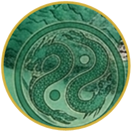

LE CLAN DU DRAGON
Établis au cœur des forteresses des Montagnes du Nord, les membres du Clan du Dragon observent les affaires de Rokugan avec détachement. Investis à la fondation de l'Empire de la mission de surveiller l'ordre du monde, ils privilégient l'expérimentation individuelle et l'éveil spirituel face aux conventions rigides : leurs guerriers manient les deux sabres en simultané, leurs magistrats appliquent une méthode d'instruction basée sur la preuve matérielle, et leurs ascètes canalisent des bénédictions sacrées dans leur chair.

1. Origine Sacrée & Vocation dans l'Empire
Lors du Premier Tournoi impérial, le Kami Togashi choisit de ne pas combattre pour le trône d'Émeraude, confiant le gouvernement de l'Empire à Hantei afin de se consacrer à la préservation spirituelle et à l'anticipation des crises futures. Le clan s'est retiré dans les altitudes septentrionales, préservant une indépendance stratégique et doctrinale totale vis-à-vis des intrigues de la capital.
L'enseignement martial du clan fut codifié par Mirumoto, père du style Niten (le combat simultané katana et wakizashi). Les lignées Kitsuki (fondée au IXe siècle par Agasha Kitsuki) et Tamori (fondée au XIIe siècle par Tamori Shaitung lors de la scission avec les Agasha) vinrent ensuite enrichir le clan d'un rationalisme judiciaire novateur et d'une tradition alchimique de guerre.
Kimonos vert foncé, émeraude et dorures discrètes. Tissus chauds et superposés adaptés au froid montagnard. Les deux sabres sont toujours disposés pour un dégainement croisé.
Histoire du clan : The Great Clans, p. 75-81. Droit coutumier Kitsuki : Emerald Empire, p. 49, 102. Tradition Niten : The Book of Fire, p. 45.
Profil de Création PJ
- Anneau Majeur : Vide & Équilibre
- Kami Fondateur : Togashi
- Siège Clanique : Kyuden Togashi
- Spécialité Martiale : Niten & Iaijutsu Niten
- Armes Clés : Katana, Wakizashi, Daikyu
- Livre de Base : Pages 112-116
2. Lignées du Clan & Familles Vassales (Familles Bushi en tête)
Livre de Base 4e Édition, p. 113-116 ; The Great Clans, p. 81-87, 286, 289, 291.Famille Mirumoto
+1 AgilitéBras armé et régents temporels du Clan du Dragon, assurant le commandement militaire et la défense des frontières montagnardes tandis que les Togashi se consacrent à la méditation. Fondée par Mirumoto, père du style Niten à deux sabres.
🌿 Familles Vassales (2 : Koukan, Zurui) ▾
- Koukan : Ordre monastique de samouraïs pieux des Mirumoto parcourant l'Empire pour secourir les humbles tout en relayant nouvelles et renseignements vers les montagnes du Dragon. (Great Clans p. 286)
- Zurui : Descendants de Mirumoto Sasugo (épouse Shiba de l'ère Gozoku) ; yojimbo d'une abnégation totale voués à protéger les shugenja du clan au péril de leur vie. (Great Clans p. 286)
Famille Kitsuki
+1 IntuitionÉrudits, diplomates et enquêteurs du clan fondés par Agasha Kitsuki. La méthode Kitsuki repose sur l'observation empirique, la collecte d'indices matériels et la logique formelle, contrastant souvent avec le système judiciaire rokugani fondé sur le témoignage social.
🌿 Familles Vassales (1 : Sakura) ▾
- Sakura : Fondée en 1120 autour des compagnons de Kitsuki Sakura qui mirent sous scellés le dangereux journal de Kitsuki Kaagi ; chargée de traquer et supprimer les savoirs interdits. (Great Clans p. 291)
Famille Tamori
+1 VolontéHéritiers des shugenja restés loyaux au Dragon après la défection des Agasha vers le Phénix. Les Tamori privilégient les magies de la Terre et du Feu, l'alchimie de guerre et l'entraînement martial aux côtés des bushi Mirumoto.
🌿 Familles Vassales (3 : Chiyu, Hiasobi, Izaku) ▾
- Chiyu : Anciens rônin shugenja herboristes accueillis après la Guerre des Clans par les Tamori ; dédiés à la médecine, aux baumes et aux remèdes naturels des montagnes. (Great Clans p. 289)
- Hiasobi : Maîtres du kagaku (alchimie du feu et feux d'artifice hanabi), anciens élèves d'Asahina Maryoku recueillis et intégrés par le daimyo Tamori. (Great Clans p. 289)
- Izaku : Gardiens de la grande Bibliothèque Izaku de savoirs magiques ; unique famille vassale autorisée par Toturi I à servir simultanément le Dragon (Tamori) et le Phénix (Agasha). (Great Clans p. 289)
Ordre Monastique Togashi
+1 RéflexesOrdre monastique plutôt que famille héréditaire, ouvert aux novices capables de survivre aux épreuves des sommets. Les moines tatoués (ise zumi) reçoivent dans leur chair les tatouages mystiques du sang de Togashi.
3. Doctrine Martiale & Perception du Bushido
Références : Livre de Règles 4e Édition, p. 60-61, 93 ; Emerald Empire, p. 48-52.Le Bushido & Makoto
Le Dragon privilégie la vertu de Sincérité (Makoto) : agir avec une authenticité absolue entre son être profond et son comportement. Le respect servile des coutumes est rejeté s'il s'oppose à la vérité ou à la clarté spirituelle. Le bushido y est perçu comme une recherche de perfection personnelle plutôt que comme une liste d'obligations sociales imposées.
Diplomatie Clanique
Le Dragon entretient de bonnes relations avec le Clan du Crabe, dont il admire le réalisme face au devoir de survie. Les joutes d'étiquette de la Grue et du Scorpion sont jugées artificielles. L'obéissance rigide du Lion est perçue comme un frein à la lucidité, tandis que les rapports avec le Phénix demeurent teintés de rivalité intellectuelle depuis la séparation des Agasha.
Pratiques Quotidiennes
La méditation assise (zazen), l'écriture d'essais philosophiques et l'ascension des sentiers rocheux font partie de l'entraînement régulier. Même les courtisans portent souvent des bottes de marche et une tenue appropriée au voyage d'altitude. L'usage du silence et la concision verbale sont considérés comme des marques de maturité.
4. Écoles de Base Officielles (Rangs 1 à 5)
Core pp. 112-116 ; Emerald Empire p. 221 ; Imperial Histories I pp. 214-215.Bénéfice : +1 Constitution • Honneur : 4.5
Compétences : Défense, Iaijutsu, Kenjutsu (Katana), Connaissance : Shugenja, Méditation, Connaissance : Théologie, une compétence Bugei ou Noble.
Équipement : Armure légère, vêtements robustes, Daisho, 1 arme, nécessaire de voyage, 5 koku.
📜 Techniques d'École (Rangs 1 à 5) ▾
- Rang 1 — La Voie du Dragon : Sans aucun malus pour le combat à deux armes avec katana en main directrice et wakizashi en main secondaire ; ajoutez votre Rang d'École au ND d'Armure (cumulatif avec le bonus normal du combat à deux armes). De plus, ciblé par un sort, vous pouvez augmenter ou diminuer de 5 le ND du jet d'Incantation.
- Rang 2 — Le Calme au Cœur du Tonnerre : En posture du Centre, bonus au total de vos jets d'Iaijutsu égal à votre rang de Kenjutsu.
- Rang 3 — Fort et Rapide : Attaque par Action Simple avec toute arme portant le mot-clé Samouraï.
- Rang 4 — Représailles Furieuses : En phase de Réactions, désignez un ennemi vous ayant attaqué (ou tenté) ce Round : +3g0 à tous vos jets d'attaque contre lui à votre prochain Tour.
- Rang 5 — Cœur du Dragon : Avec katana (directrice) et wakizashi (secondaire), si vous attaquez deux fois durant votre Tour, vous pouvez porter une attaque supplémentaire avec l'arme secondaire par Action Gratuite.
📜 Détails des Écoles Complémentaires (3) ▾
+1 Vide • H 5.5 (1 koku, Ascétique gratuit). R1 : sans armure avec un sabre, Réduction = Rang d'École + 2 et +1g0 aux dégâts. R2 : Renversement coûte 1 Aug. de moins ; en Grapple avec sabre, inflige dégâts du sabre. R3 : 1 Vide sur dégâts du sabre (cumulatif). R4 : Action Simple avec sabre. R5 : 1/escarmouche, dépensez autant de Vide que désiré en dégâts.
+1 Vide (Vide initial 3 comme Moine Confrérie, 2 Kiho + 2/Rang) • H 4.5. Swift Fist, Subtle Heart : par Action Gratuite, 1 Vide active pour Rang d'École Rounds le choix au début de chaque Tour entre +1g1 attaque à mains nues OU +1g0 dégâts à mains nues. Débute avec 1 Tatouage (+1 au Rang 4).
+1 Réflexes • H 4.5. R1 : +1 Tatouage ; ajoutez Réflexes au ND d'Armure ; Réflexes pour contrôler un Grapple. R2 : 1 Vide en dégâts à mains nues. R3 : Action Simple à mains nues + 1 Tatouage. R4 : Renversement −1 Aug. et +1g1 dégâts à mains nues. R5 : Renversement (+2 Aug.) ou Projection en Grapple (Terre ND 20) rend Sonné + 1 Tatouage.
Bénéfice : +1 Perception • Honneur : 5.5
Compétences : Courtisan, Étiquette (Courtoisie), Enquête (Interrogatoire), Kenjutsu, Méditation, Sincérité, une compétence de Connaissance.
Équipement : Vêtements traditionnels, Wakizashi, Couteau, nécessaire de calligraphie, nécessaire de voyage, 5 koku.
📜 Techniques d'École (Rangs 1 à 5) ▾
- Rang 1 — La Méthode de Kitsuki : Augmentation Gratuite sur tous vos jets d'Enquête. Ajoutez votre Trait Perception à votre ND d'Armure en escarmouche.
- Rang 2 — La Sagesse qu'Apporte le Vent : Tout Jet Social visant à vous mentir/tromper ou toute manœuvre Feinte ou Désarmement contre vous subit +5 par Rang d'École Kitsuki au ND.
- Rang 3 — Connaître le Rythme du Cœur : Enquête (Observation)/Perception contre ND 5 × Intelligence cible révèle une image fidèle de sa personnalité et ses motivations.
- Rang 4 — Trouver la Voie : 1/jour par interlocuteur, Jet Opposé Enquête (Interrogatoire)/Intelligence vs Étiquette (Courtoisie)/Intelligence pour identifier un allié ou ennemi (+1 par Augmentation).
- Rang 5 — Les Yeux Trahissent le Cœur : Tout mensonge conscient envers vous déclenche automatiquement Enquête (Interrog.)/Perception vs Sincérité (Tromperie)/Volonté (+5g0 si vous savez déjà qu'on vous ment ; Augmentations révèlent davantage).
Bénéfice : +1 Constitution • Honneur : 4.5 • Affinité/Déficience : Terre / Air.
Compétences : Athlétisme, Calligraphie (Chiffre), Défense, Divination, Connaissance : Théologie, Médecine, Art de la Magie.
Sorts : Sens, Communion, Convocation, 3 Terre, 2 Feu, 1 Eau.
Équipement : Robes, Wakizashi, 1 arme au choix, Sacoche à parchemins, nécessaire de voyage, 5 koku.
📜 Détails & Techniques d'École ▾
Technique — Chair des Éléments : Dépensez un emplacement de sort pour distiller un sort connu à cible unique (personne/créature) en potion (en autant d'heures que son Niveau de Maîtrise), occupant l'emplacement jusqu'à activation : Action Simple pour boire ou Action Complexe (Athlétisme [Lancer]/Agilité) pour lancer. Augmentation Gratuite sur tout sort avec mot-clé Artisanat.
Bénéfice : +1 Vide • Honneur : 4.5
Compétences : Athlétisme, Défense, Artisanat : Tatouage, Jiujutsu, une compétence de Connaissance, Méditation, une compétence non-Dégradante.
Équipement : Robes, Bo, nécessaire de voyage, 5 koku.
📜 Techniques d'École (Rangs 1 à 5) ▾
- Rang 1 — Sang du Kami : Vous recevez 2 Tatouages mystiques (Core pp. 263-266). Activables par Action Gratuite s'ils sont exposés (1 seul actif à la fois sauf exception ; durée : 2 × Rang d'École Rounds).
- Rang 2 — Corps de Pierre : +1g1 au total de tous vos jets d'attaque et de dégâts à mains nues.
- Rang 3 — Bénédiction du Kami : +2 Tatouages supplémentaires.
- Rang 4 — Volonté de Pierre : Attaques à mains nues par Action Simple au lieu d'Action Complexe.
- Rang 5 — Contact du Kami : +2 Tatouages supplémentaires.
5. Écoles Avancées & Voies Alternatives Officielles
Textes officiels complets (Core pp. 247, 252 ; Great Clans pp. 102-104 ; Earth/Fire ; Strongholds ; IH1).⚖️ Règles & Effets détaillés ▾
R1 : Katana (main directrice) et wakizashi (secondaire) : vous pouvez dépenser des points de Vide 2 fois par Tour.
R2 : En duel iaijutsu, +1g1 automatique au jet de Focus (comme après victoire d'Évaluation, n'affecte pas le bonus adverse).
R3 : Avec katana + wakizashi, ignorez toute Réduction des adversaires.
⚖️ Règles & Effets détaillés ▾
R1 : Au sabre, mettre un ennemi Down/Out/Dead rend 1 point de Vide (peut dépasser Anneau jusqu'à fin d'escarmouche).
R2 : Action Simple + 1 Vide pour ignorer les malus de Blessures (y compris Down, hors Out) durant l'escarmouche (ou 10 min).
R3 : 1/jour Action Simple, Intuition/Méditation ND 25 + 5/allié partage R1 à vos alliés pour l'escarmouche.
⚖️ Règles & Effets détaillés ▾
Si surpris en début d'escarmouche, second jet immédiat Athlétisme/Agilité pour annuler la surprise. Ajoute ⌈Athlétisme/2⌉ à tous vos jets d'attaque à distance.
⚖️ Règles & Effets détaillés ▾
Bonus de +1g0 aux jets d'attaque, ou +2g2 lorsque vous utilisez un arc.
⚖️ Règles & Effets détaillés ▾
Ajoutez rang d'Enquête aux jets d'Évaluation iaijutsu ; +1g0 en Focus/Frappe contre un criminel condamné par autorité Dragon/Impériale supérieure, et +1g0 Chasse/Enquête pour le traquer.
⚖️ Règles & Effets détaillés ▾
Pendant l'Évaluation d'un duel, Action Gratuite + 1 Vide force un Jet Opposé Kenjutsu/Feu : si remporté, l'adversaire ne peut dépenser de Vide sur son jet de Focus.
⚖️ Règles & Effets détaillés ▾
Sentinel (R3/4) : +1g0 à 3 Bugei dans sa province (Connaissance Terrain) + Vide opposé réduit Eau adverse de 1 pour Mouvement. Water Hammer Smith (R2) : 1 Vide/emplacement Eau ajoute 2 × Eau aux jets d'Artisanat du jour. Transcendent Brotherhood (R2) : 1h Méditation/Feu ND 20 = immunité au feu normal (1/2 Aug. magique/volcan) pendant Feu heures + (+Feu) aux traits/comp. Perception, Intuition, Intelligence pendant douleur et 10 min.
⚖️ Règles & Effets détaillés ▾
R1 : Dépensez 2 emplacements d'un Anneau non opposé (Air↔Terre, Feu↔Eau) au lieu d'1 du bon Anneau.
R2 : +1 Rang de Shugenja. Action Gratuite + 1 emplacement = Réduction 2 et +10 ND Armure (Terre Rounds), mais 1 Augmentation à vide sur vos sorts.
R3 : Action Simple + 1 Vide + 1 emplacement = +4g1 aux sorts d'un mot-clé choisi (rencontre / 1h).
⚖️ Règles & Effets détaillés ▾
Action Gratuite + 1 emplacement = +1g0 sur un jet Bugei (max Rang d'École/Round). Attaque Action Simple avec arme invoquée (Bo of Water, Tetsubo of Earth, Katana of Fire, Yari of Air).
⚖️ Règles & Effets détaillés ▾
Étiquette (Conversation)/Intuition ND 20 (+Aug.) force la cible à Sincérité/Intuition ND 20 + 5/Aug. ou subir −1g1 à son prochain Jet Social contre vous.
⚖️ Règles & Effets détaillés ▾
Sans armure ni Kiho/Tatouage actif, gagnez Réduction = 3 + Anneau de Vide. Vous gagnez 1 Tatouage supplémentaire.
⚖️ Règles & Effets détaillés ▾
En terminant une arme Samouraï par Artisanat, dépensez tous vos points de Vide pour infuser (Terre) Augmentations Gratuites dans l'arme (rechargées tous les 30 jours ; max Terre armes actives).
Aucune école avancée ou voie alternative spécifique pour ce filtre.